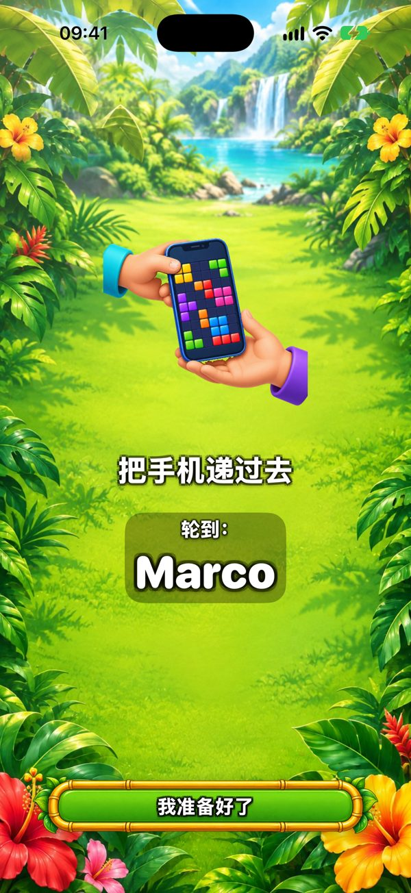
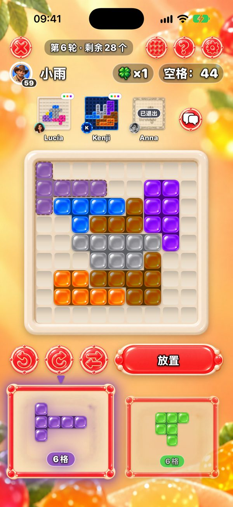
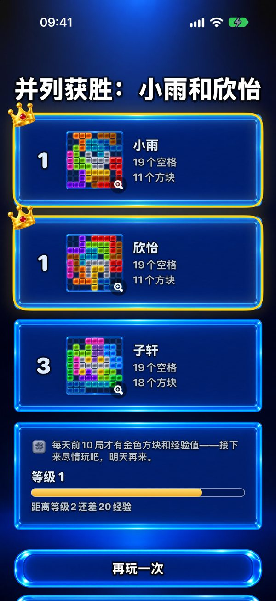

一部手机怎么玩？
每个人先用一块随机的起始方块盖住自己棋盘的中心。之后每一轮出现两块方块。第一位玩家选一块，放在自己棋盘上的任意位置（可以旋转和翻转），然后把手机递给下一位。“把手机递过去”画面会显示轮到谁。大家拿到的都是同样的两块，所以很公平；不同的只是每个人的棋盘怎么长。

可以几个人玩？
两人免费。有了 Premium（一次购买，无需订阅），一部手机或 iPad 最多可以六个人玩。人多的时候，把 iPad 放在桌上最合适。
每个人能用自己的手机吗？
可以。附近的手机通过蓝牙和 Wi‑Fi 连接（无需网络），所有人同时下，屏幕上方能看到其他人的棋盘。超过两人时，只有创建游戏的人需要 Premium。

谁赢？
剩下空格最少的人。如果两块都放不下，你可以拿“再来一次机会”：一块只属于你的额外方块。把棋盘完全填满，是最高目标。

一局多长时间？
一局最多 20 轮。一个人玩只要几分钟；多人玩取决于每个人想多久，因为每次只放一块。有了 Premium，可以把每一步限制在 30、60 或 90 秒。
适合几岁？
由于有可选的好友聊天和广告，App Store 分级为 13+。游戏本身就是把彩色方块放到棋盘上：没有暴力，不开计时器就不用着急，放方块也不需要识字——小朋友可以在大人身边一起玩。
免费吗？有广告吗？
游戏免费。广告只出现在单人对局之间，和朋友一起玩时从不出现，不论一部手机还是多部。Premium 去掉广告，并多出六个主题，最多六人一起玩。
需要网络吗？
不需要。一部手机或附近多部手机都能离线玩。只有在线牌桌、好友和每日挑战排名才需要网络。